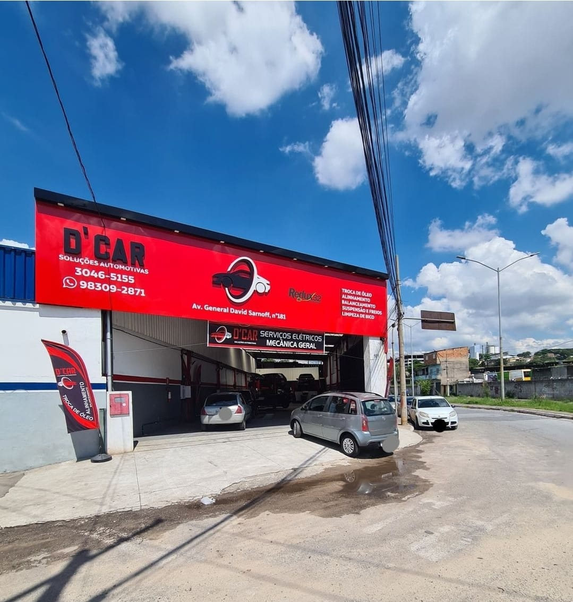
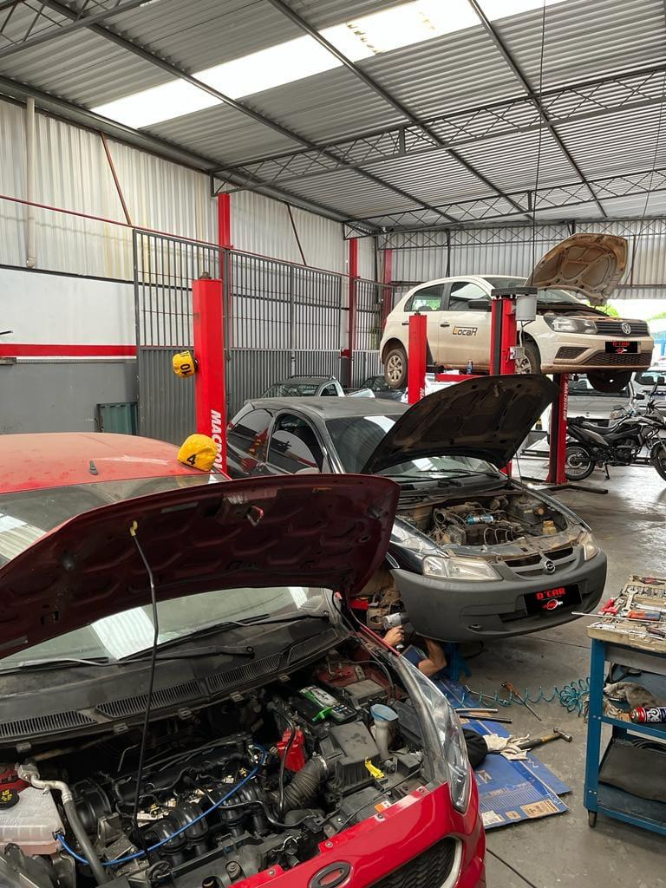

Sobre nós
A empresa D'car Soluções Automotivas foi fundada em 25/03/2021, tendo como proprietárias Roanna Tostes Queiroga, desde 25/03/2021 e Nara Mendes Santos sócia desde 12/06/2023.
Sua sede está localizada na Avenida General David Sarnoff, 169 - Cidade Industrial, CEP: 32.210-110, na cidade Contagem do estado Minas Gerais.
Sua atividade principal, conforme a Receita Federal, é Comércio a varejo de peças e acessórios novos para veículos automotores. Sua situação cadastral até o momento é Ativa.
Suas atividades secundárias são:
- Comércio a varejo e por atacado de veículos automotores
- Manutenção e reparação de veículos automotores
- Manutenção e reparação de veículos automotores
- Manutenção e reparação de veículos automotores
- Manutenção e reparação de veículos automotores
Utilizando da tecnologia, oferece uma gama de serviços de alta qualidade proporcionando a melhor experiência ao cliente, garantindo sua satisfação!
Nossos Serviços
Revisão automotiva
Uma revisão automotiva, também conhecida como manutenção preventiva ou revisão periódica, é um conjunto de verificações e serviços realizados em um veículo para garantir que ele esteja operando de maneira segura, eficiente e confiável. Esse processo é fundamental para prolongar a vida útil do veículo e evitar problemas mecânicos graves no futuro.

Troca de Óleo
A troca de óleo automotiva é um procedimento fundamental de manutenção preventiva realizada em veículos para garantir o funcionamento adequado do motor e prolongar a vida útil do veículo. Este processo envolve a substituição do óleo lubrificante usado por óleo novo, juntamente com a troca do filtro de óleo, se necessário.

Alinhamento e Balanceamento 3D
O alinhamento automotivo refere-se à posição correta das rodas em relação ao veículo e entre si. É essencial para garantir que as rodas estejam perpendicularmente alinhadas ao solo e paralelas umas às outras
O balanceamento de rodas refere-se à distribuição uniforme do peso em torno do eixo da roda. Quando uma roda está desbalanceada, isso cria vibrações que podem ser sentidas no volante ou no assento do carro.
Suspensão e Freios
A suspensão de um veículo é responsável por absorver impactos do terreno, proporcionar estabilidade e manter as rodas em contato adequado com o solo. É importante realizar inspeções regulares da suspensão para identificar sinais de desgaste, como ruídos, vazamentos de fluidos, folgas nas articulações e amortecedores desgastados.
Os freios são cruciais para a segurança do veículo, portanto, sua manutenção deve ser realizada regularmente para garantir o funcionamento adequado
A manutenção adequada da suspensão e dos freios é essencial para garantir não apenas a segurança do motorista e dos passageiros, mas também para prolongar a vida útil dos componentes do veículo e garantir um desempenho eficiente. Recomenda-se seguir o cronograma de manutenção recomendado pelo fabricante do veículo e procurar um profissional qualificado para realizar inspeções e serviços conforme necessário.

Limpeza de Bicos
A limpeza dos bicos injetores é essencial para garantir o funcionamento adequado do motor e manter o desempenho do veículo.
Existem diferentes métodos para limpar os bicos injetores, incluindo o uso de aditivos de combustível especiais, limpadores de bico injetor ultrassônicos e serviços profissionais de limpeza por máquina. O método escolhido pode depender do nível de sujeira nos bicos e das recomendações do fabricante do veículo.
Contato
Entre em contato conosco para maiores informações:
Telefone: (31) 3046-5155 / 98309-2871
Avenida General David Sarnoff, 169
Cidade Industrial